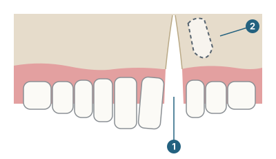

研究参加者募集
2Dと3D、どちらが分かりやすい？
歯ぐきの骨のすき間をうめる手術の説明
研究課題名：段階を見る ― 口唇口蓋裂の顎裂部骨移植の説明における、2D、拡張現実（AR）、動画、3Dプリント教材の比較

- 1歯ぐきの骨のすき間（顎裂）
- 2骨の中で出てくるのを待つ大人の犬歯
- 説明のための簡単な図です。
顎裂部骨移植とは？
生まれつき口唇口蓋裂がある子どもがいます。小さいころの手術でくちびると上あごを閉じますが、歯をささえる骨には、すき間がのこることが多くあります。このすき間を顎裂（がくれつ）といいます。
8～11歳ごろに、外科医が、多くの場合こしの骨を使って、このすき間をうめます。これにより、大人の犬歯がおりてくるための骨ができます。治療は何年も続くため、この研究では「手術の前」「約3か月後」「数年後」の3つの段階で説明します。
この研究について
この研究は、名古屋大学の博士課程の研究の一部で、愛知学院大学の早川教授、夏目長門教授と共同で行います。研究者は歯科医師で、この治療を理解するうえで、2Dの資料と3Dの資料がどのように評価されるかに関心をもっています。参加者には、3つの段階を説明する4種類の資料を見ていただき、評価と順位付けをしていただきます。
))
))
ARウェブページ
（拡張現実）
))
した模型
))
付き動画
図はイメージです。研究で使う実際の資料は、研究の場で初めてご覧いただきます。
募集する方
18歳以上で、次のいずれかにあてはまる方：
- 歯学部の学生
- 医学部の学生
- 歯科医師
- 医師
- 口腔外科医
- その他の医療従事者（看護師、言語聴覚士、歯科衛生士など）
- 一般の方（医療の資格がない方）
口唇口蓋裂の経験がなくても参加できます。
参加の流れ
- QRコードを読み取り、説明を読んで、オンラインで同意します。
- 4種類の説明資料を1つずつ、決められた短い時間で見ます。どの資料も3つの段階を説明しています。
- それぞれについて短い質問に答え、最後に4つに順位を付けます。
- 所要時間は約［X］分です。
参加にあたって
- 参加は自由です。送信する前なら、いつでもやめることができます。
- お名前は集めません。回答は匿名で、名古屋大学の安全なストレージに保存します。
- 参加に費用はかかりません。
- この研究では、個人への医療・歯科の助言は行いません。